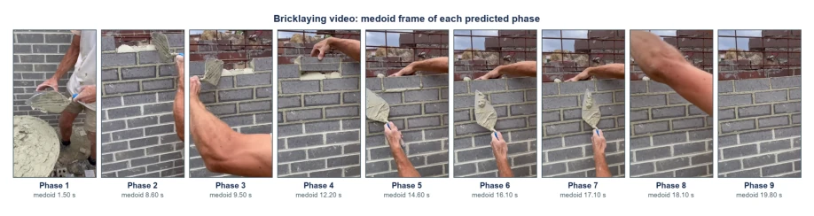

This ConsensusTAS focuses on label-free self-supervised learning, attempting to address the high cost of labeling long video action segmentation. Although the authors boast about topping the leaderboard on GTEA and Breakfast, it essentially relies on "internal consensus" voting, somewhat like "elected cadres". The biggest flaw is the lack of a genuine construction site dataset, having to rely on public datasets to make up the numbers, raising doubts about robustness in real-world scenarios. However, the ability to run on CPU is indeed pragmatic; for resource-constrained mobile robot platforms, saving the inference cost of large models is a tangible advantage. Compared to methods relying on large vision-language models, it is more lightweight, but the upper limit of accuracy may be limited, suitable for edge scenarios with high real-time requirements.
研究动机Motivation
建筑机器人协同需要理解工人细粒度动作，现有研究多停留在粗分类（如攀爬、搬运）。细粒度分段标注耗时巨大。现有自监督方法如SSCAP依赖共现模式 [2]，OTAS依赖物体交互变化 [5]，Optimal Transport 依赖初始矩阵 [6]。这些方法在建筑工地复杂环境（遮挡、相机运动）下容易失效。本文旨在开发不依赖标签、对初始化不敏感的分段方法，填补建筑领域数据缺失的空白，实现无需人工标注的长视频理解。
Construction robot collaboration requires understanding workers' fine-grained actions, while existing research mostly remains at coarse classification (e.g., climbing, carrying). Fine-grained segmentation labeling consumes huge time. Existing self-supervised methods such as SSCAP rely on co-occurrence patterns [2], OTAS relies on object interaction changes [5], Optimal Transport relies on initial matrices [6]. These methods are prone to failure in complex construction site environments (occlusion, camera motion). This paper aims to develop a segmentation method that does not rely on labels and is insensitive to initialization, filling the gap of missing data in the construction field, achieving long video understanding without manual annotation.
The overall process is divided into five steps. First, frame features are standardized and PCA dimensionality reduction is performed. Second, multi-scale boundary evidence is calculated, combining cosine distance and Euclidean motion. Next, 48 candidate segments are generated, scored using an internal reward function (consistency, contrast, compactness, complexity). The top 25% elite candidates are retained. Finally, consensus density is generated through a Gaussian kernel, where peaks serve as boundaries. The core innovation lies in not relying on external ground truth, but only utilizing the consistency of internal video features to construct segmentation, reducing hyperparameter sensitivity. Through multi-scale sampling and random settings, the model's robustness to time scales is enhanced, avoiding bias from single initialization.
Tested on GTEA, Breakfast, Assembly101. Metrics are F1@10/25/50. ConsensusTAS achieves F1@10 of 73.08 on GTEA, outperforming ASESM. F1@50 on Assembly101 is 33.50. Ablation experiments show that density decoding and internal calibration have the greatest impact on performance. A real brick wall video was divided into 9 stages, and manual evaluation considered it interpretable. It proves the method's generalization ability on unseen data, and requires no GPU support, suitable for deployment on mobile robots.
其他图片Other Figures

Fig. 5. Qualitative visualization of the nine anonymous phases discovered by ConsensusTAS in an unlabeled bricklaying video.